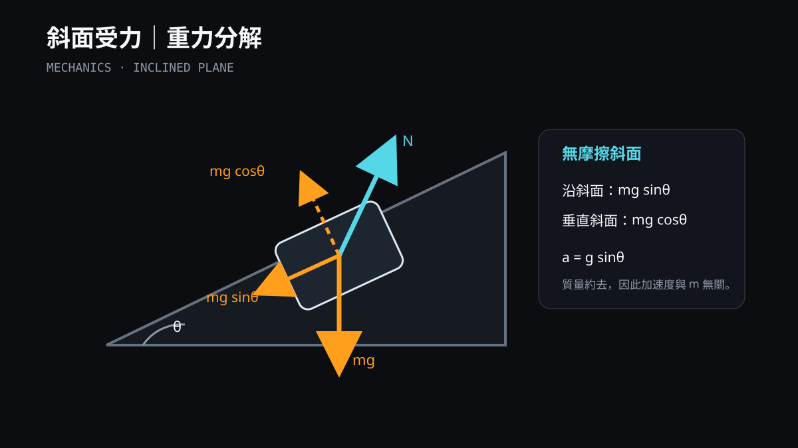
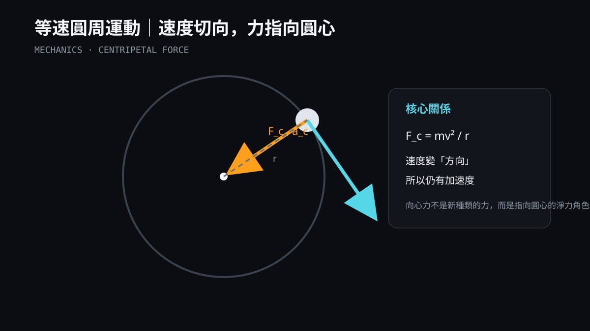
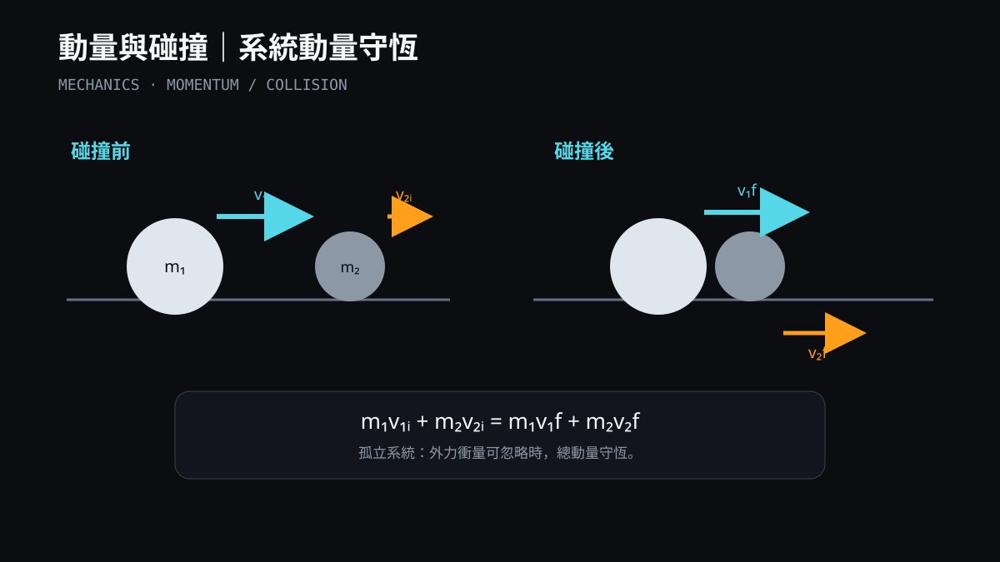
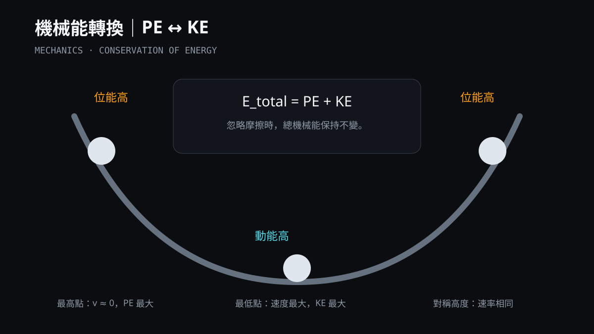
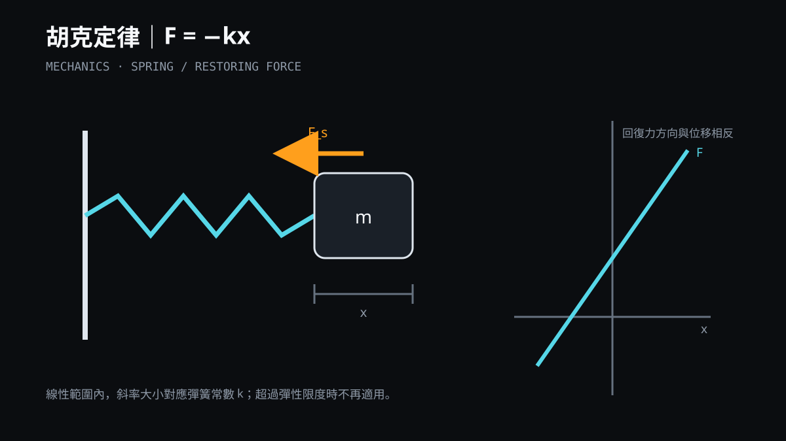
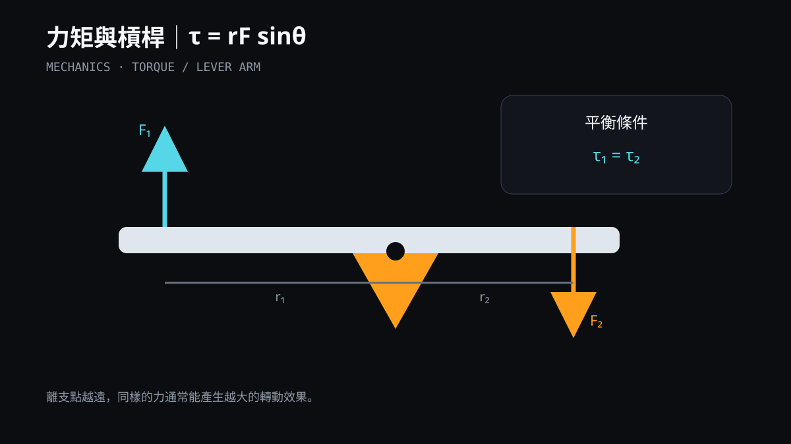
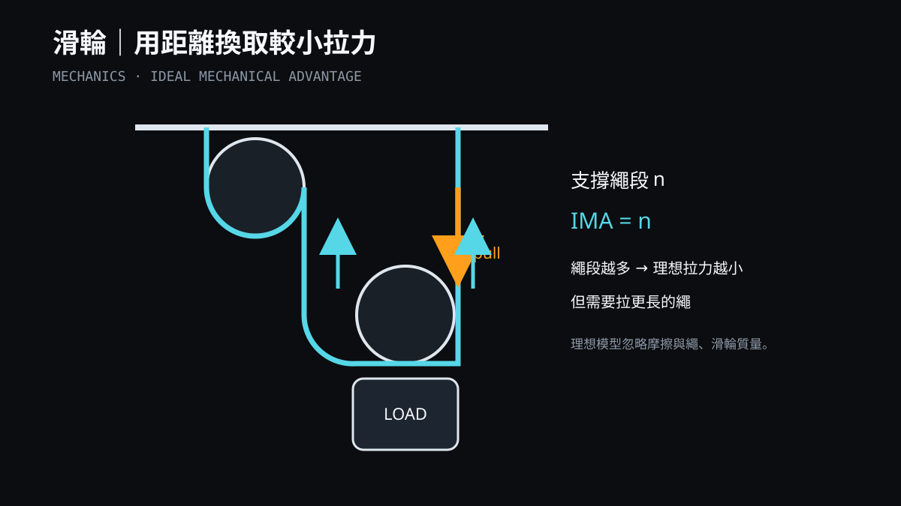
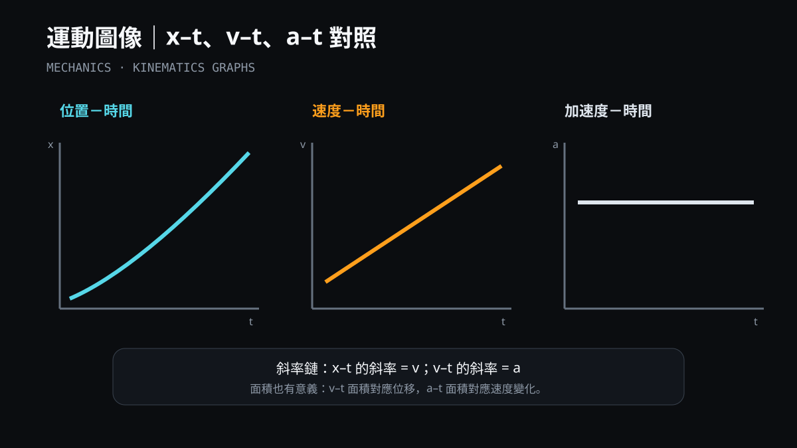

可直接用於物理講義、簡報與網頁教材的自製 SVG。統一使用橘色表示力／加速度、青色表示速度／軌跡／運動量，並保留可編輯向量結構。
淨力、質量與加速度的方向和比例。
F_net = ma

重力平行與垂直斜面分量。
mg sinθ · mg cosθ
水平等速與垂直等加速度的合成。

速度切向、向心力與加速度指向圓心。
F_c = mv²/r

孤立系統碰撞前後的總動量守恆。
Σp_i = Σp_f

無摩擦軌道中的重力位能與動能轉換。
E_total = PE + KE

彈簧位移與回復力的線性關係。
F = −kx

力臂、施力與轉動效果。
τ = rF sinθ

以較長拉繩距離換取較小理想拉力。
IMA = n

x–t、v–t、a–t 三圖的斜率與面積關係。